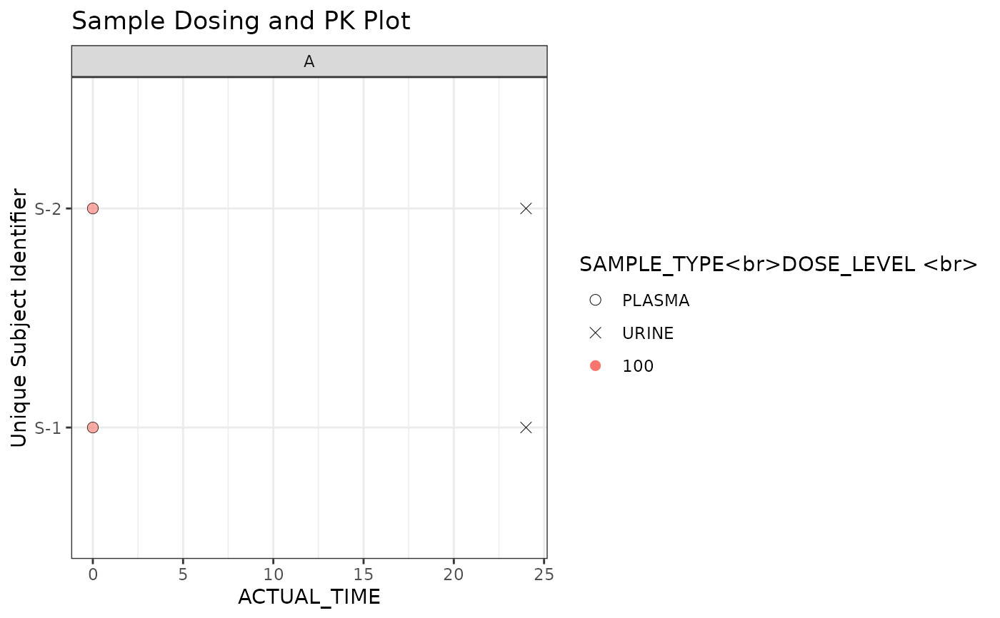

Generates a faceted QC plot by layering concentration data (as
black shapes) and dose data (as colored points). It creates a single, unified
legend for both data types and can return either a static ggplot or an
interactive plotly object.
Usage
faceted_qc_plot(
data_conc,
data_dose = NULL,
x_var,
y_var,
colour_var,
shape_var,
grouping_vars,
other_tooltip_vars = NULL,
x_var_units = NULL,
colour_var_units = NULL,
labels_df = metadata_nca_variables,
title = NULL,
show_pk_samples = TRUE,
show_doses = TRUE,
as_plotly = FALSE
)Arguments
- data_conc
A data.frame containing concentration data (e.g., PK samples).
- data_dose
An optional data.frame containing dosing information.
- x_var
Character. The column name to be used for the x-axis.
- y_var
Character. The column name to be used for the y-axis.
- colour_var
Character. The column in
data_doseto map to color.- shape_var
Character. The column in
data_concto map to shape.- grouping_vars
Character vector. Column names to use for faceting.
- other_tooltip_vars
Optional character vector of additional column names to include in the tooltip.
- x_var_units
Character. The column name containing the units for the x-axis variable. It is expected that this column contains a single unique value.
- colour_var_units
Character. The column name for the units of the colour variable in
data_dose. It is expected that this column contains a single unique value.- labels_df
A data.frame used by helper functions to look up variable labels. It uses metadata_nca_variables as default
- title
Character. The main title for the plot.
- show_pk_samples
Logical. If
TRUE, plots the concentration data.- show_doses
Logical. If
TRUE, plots the dose data.- as_plotly
Logical. If
TRUE, converts the final plot to an interactiveplotlyobject.
Details
Unless specified, the variables required as arguments are expected to
be present in both data_conc and data_dose.
Examples
# Sample concentration data
conc_data <- data.frame(
USUBJID = rep(paste0("S-", 1:2), each = 2),
ACTUAL_TIME = c(0, 24, 0, 24),
SAMPLE_TYPE = rep(c("PLASMA", "URINE"), 2),
COHORT = "A",
TIME_UNIT = "hr"
)
# Sample dose data
dose_data <- data.frame(
USUBJID = rep(paste0("S-", 1:2), each = 1),
ACTUAL_TIME = c(0, 0),
DOSE_LEVEL = c(100, 100),
COHORT = "A",
DOSE_UNIT = "mg"
)
# Generate the plot
faceted_qc_plot(
data_conc = conc_data,
data_dose = dose_data,
x_var = "ACTUAL_TIME",
y_var = "USUBJID",
colour_var = "DOSE_LEVEL",
shape_var = "SAMPLE_TYPE",
grouping_vars = "COHORT",
x_var_units = "TIME_UNIT",
colour_var_units = "DOSE_UNIT",
title = "Sample Dosing and PK Plot"
)
